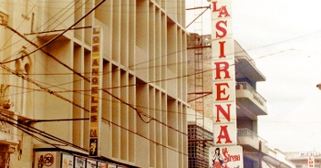

La historia de Grupo Ramos comenzó el 1 de diciembre de 1965, cuando el señor Román Ramos Uría adquirió la tienda La Sirena, un pequeño local ubicado en la avenida Mella de Santo Domingo. La Sirena Mella empezó a crecer con firmeza y a revolucionar el mercado comercial dominicano con el autoservicio, el horario corrido y los precios bajos y fijos, convirtiéndose en poco tiempo en la tienda por departamentos más popular y concurrida del país.
La visión y los valores de sus fundadores, el trabajo tesonero de su equipo de trabajo y un enfoque claro en el cliente, han sido constantes en la trayectoria de Grupo Ramos, y constituyen piezas claves para su éxito y liderazgo.
Ser la empresa de ventas al detalle preferida, con operaciones de clase mundial.
Ofrecer una experiencia de compra que haga la vida más práctica y feliz.
Actuamos siempre con trasparencia, compromiso y equidad.
Nos apasiona entender las necesidades del cliente y ofrecerle soluciones con amabilidad y respeto.
Mejoramos arduamente y nos apoyamos para logrear las metas.
Trabajamos arduamente y nos apoyamos para lograr las metas.
Nos acercamos a las comunidades y contribuimos con su bienestar.